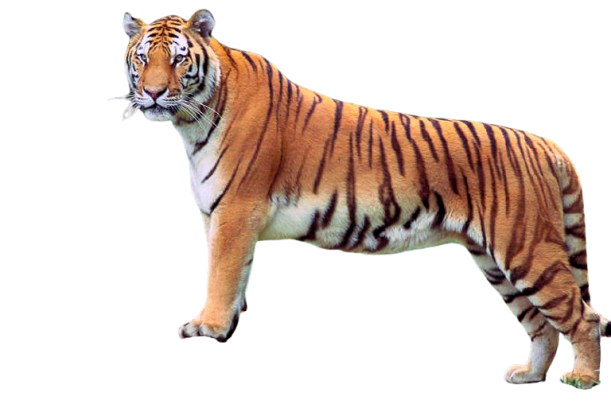

Tigre de Bengala
Bienvenido al mundo del Tigre de Bengala
El tigre de Bengala es uno de los felinos más grandes y poderosos del planeta.
Vive principalmente en India, Bangladesh, Nepal y Bután.

Características:
- Nombre científico: Panthera tigris tigris
- Peso: entre 180 y 260 kg
- Longitud: hasta 3 metros incluyendo la cola
- Velocidad: hasta 60 km/h
- Alimentación: ciervos, jabalíes y otros mamíferos
Otros grandes felinos:
- León africano
- Leopardo
- Jaguar
- Guepardo